전체 21건
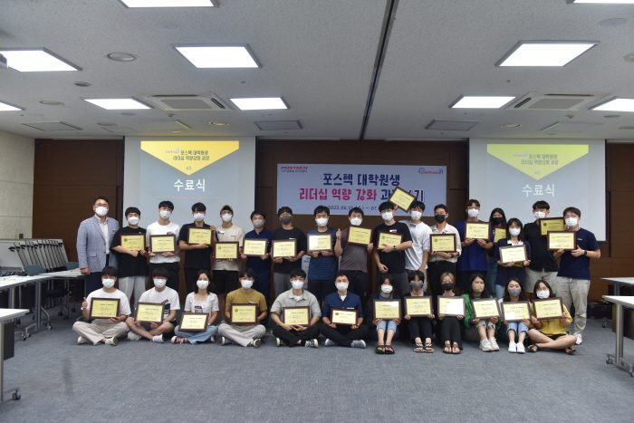
포스텍 대학원생 리더십 역량 강화 과정(4기)
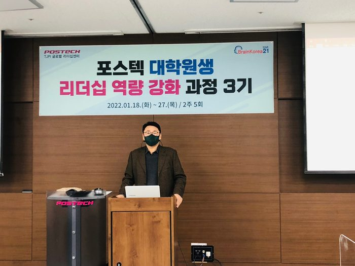
포스텍 대학원생 리더십 역량 강화 과정(3기)
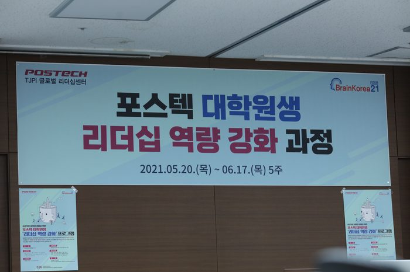
포스텍 대학원생 리더십 역량 강화 과정(1-2기)
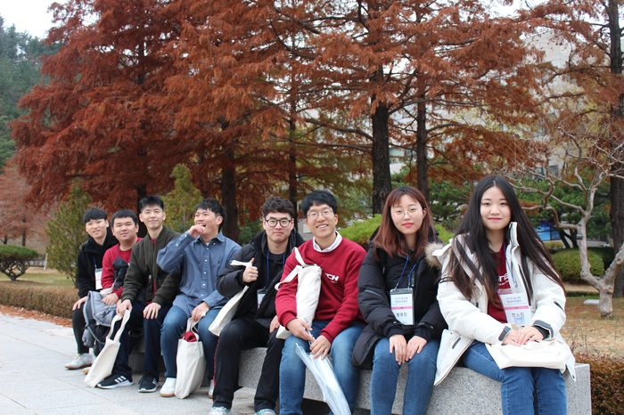
2019 포스텍 청년비전캠프 3일 :: 청년들이여 꿈과 희망을 가져라, 시상식
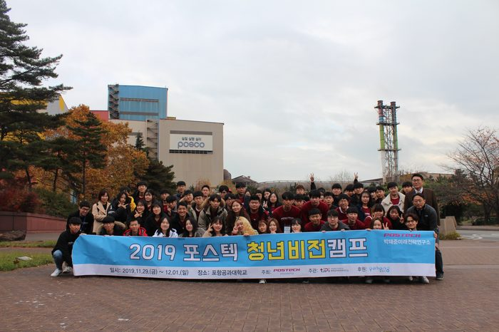
2019 포스텍 청년비전캠프 2일 :: 명사특강, 토론의 장
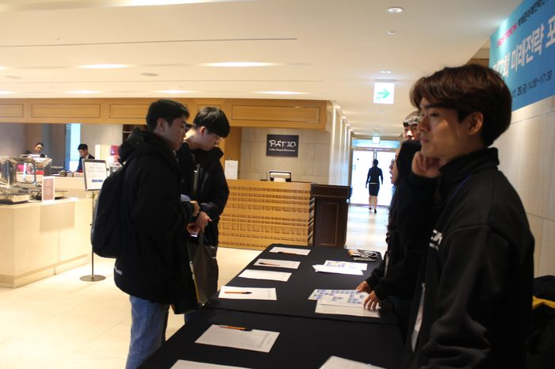
2019 포스텍 청년비전캠프 1일 :: 제7회 미래전략포럼 & O.T & 리더십교육
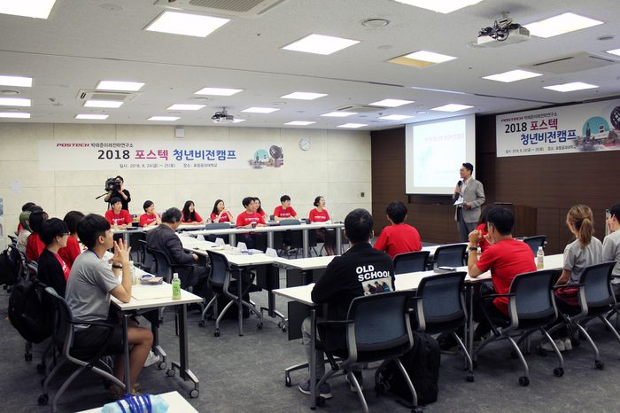
2018 포스텍 청년비전캠프 1일 :: 토론회 & 리더십교육
- TJPI
2018 포스텍 청년비전캠프 포항KBS 9시 뉴스 보도자료
- TJPI
2017 에세이 수상자 발표 및 토론 :: 대상 노현태(한양대), 유용재(서울대)
2017포스텍 박태준미래전략연구소에서 개최한 '성숙한 시민의식' 에세이 공모전 수상자들의 발표 및 토론 영상입니다. 우수상 수상자 중 12팀이 참가하여 발표 및 토론을 진행하였으며 대상 1팀, 최우수상 2팀이 선정되었습니다.
- TJPI
2017 에세이 수상자 발표 및 토론 :: 최우수상 배형준(연세대학교)
2017포스텍 박태준미래전략연구소에서 개최한 '성숙한 시민의식' 에세이 공모전 수상자들의 발표 및 토론 영상입니다. 우수상 수상자 중 12팀이 참가하여 발표 및 토론을 진행하였으며 대상 1팀, 최우수상 2팀이 선정되었습니다.
- TJPI
2017 에세이 수상자 발표 및 토론 :: 최우수상 송은호(서울대학교)
본 영상은 최우수상을 수상한 송은호(서울대학교) 학생의 '현대 한국사회의 ‘개별 집단’과 ‘전체 사회’의 균형추로서의 ‘시민’에 대하여'라는 주제로 발표와 토론입니다.
- TJPI
2017 에세이 수상자 발표 및 토론 :: 우수상 박민주(동아대학교)
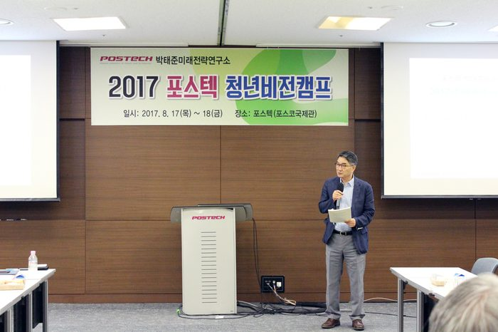
2017 포스텍 청년비전캠프 2일 :: 시상식
○ 토론주제 : 우리나라 국민들의 시민의식 수준을 진단하고, 보다 성숙한 시민의식 함양을 위한 구체적인 방안을 제시
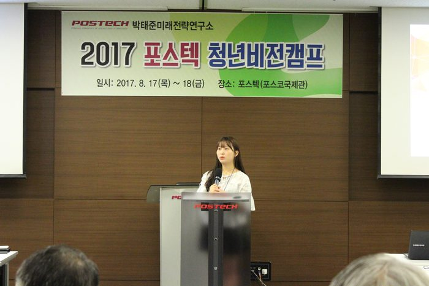
2017 포스텍 청년비전캠프 2일 :: 토론회
○ 토론주제 : 우리나라 국민들의 시민의식 수준을 진단하고, 보다 성숙한 시민의식 함양을 위한 구체적인 방안을 제시
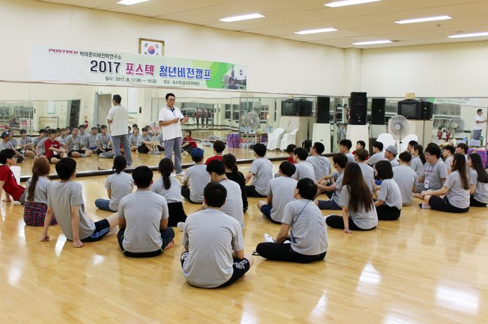
2017 포스텍 청년비전캠프 :: 팀워크 액티비티
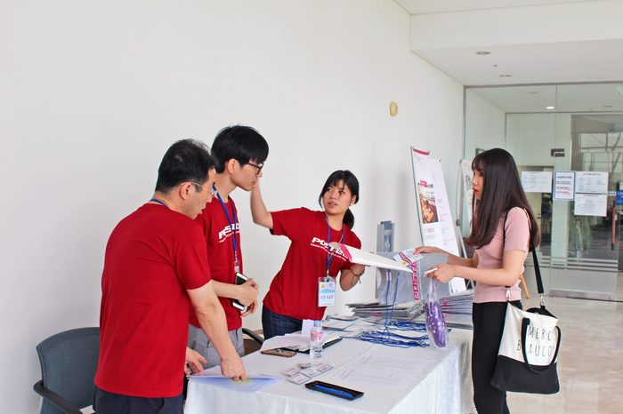
2017 포스텍 청년비전캠프 1일
- TJPI
KBS 포항 라디오 생생매거진 동해안 방송(2017.8.16)
정기준교수는 라이오를 통해 2017. 8. 17~18 개최되는 2017 포스텍 청년비전캠프' 및 전국 대학생 및 대학원생을 대상으로 개최한
- TJPI
KBS포항 9시뉴스 '2017 포스텍 청년비전캠프 개최' _ 2017.8.17
- TJPI
KBS포항 9시뉴스 '2016 포스텍 청년비전캠프 개최' _ 2016.7.14
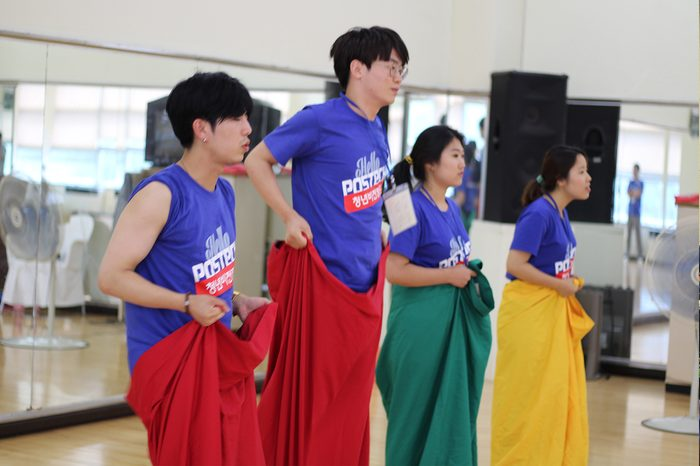
2016 포스텍 청년비전캠프 리더십프로그램

2016 포스텍 청년비전캠프 1일